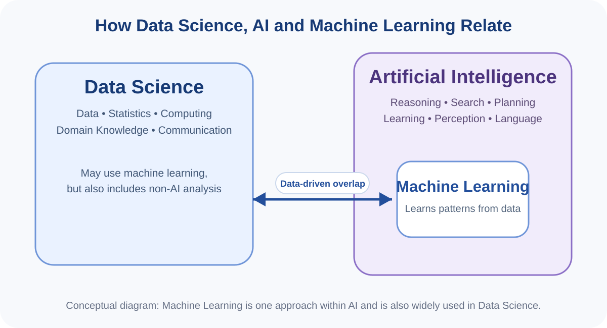
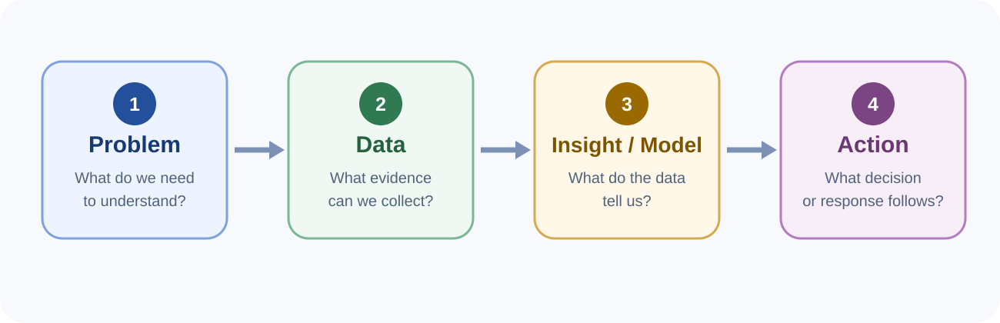
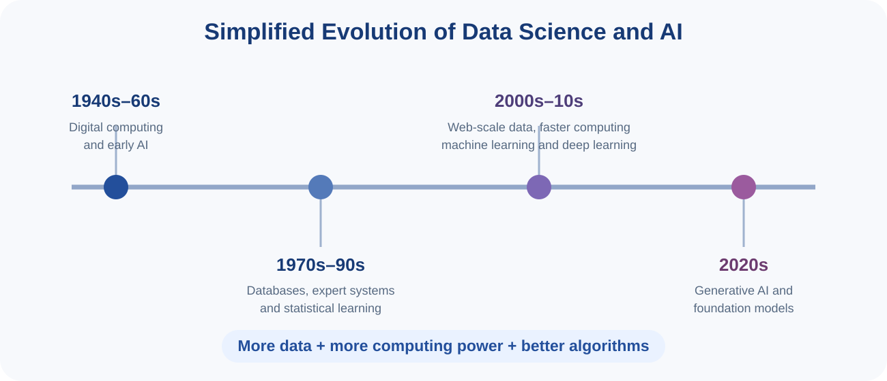
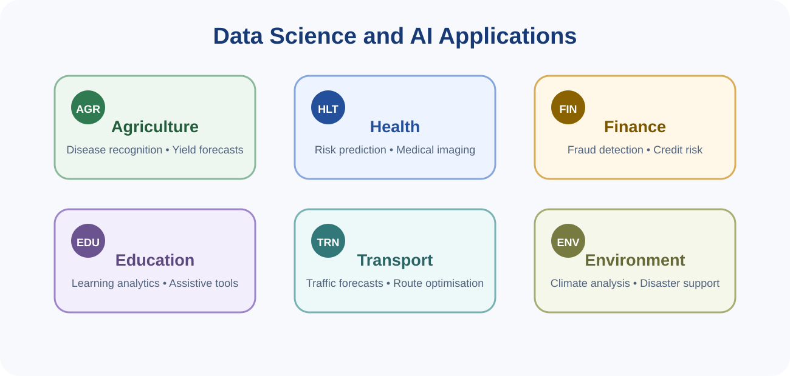

You can read these notes on screen or use the button below to print or save them as PDF.
Data Science is an interdisciplinary field concerned with using data to answer questions, discover patterns, generate evidence and support decisions. It draws on computing, statistics, mathematics and knowledge of the problem domain. A Data Scientist therefore does more than run software: the person must understand the problem, judge whether the data are suitable, select appropriate methods, interpret results and communicate them clearly.
Artificial Intelligence (AI) is the broad field concerned with designing computer systems that perform tasks associated with intelligent behaviour. Such tasks include reasoning, planning, learning, recognising patterns, understanding language, perceiving images or sound, making predictions and supporting decisions.
Machine Learning (ML) is one major approach within AI. Instead of explicitly programming every rule, a machine-learning system learns patterns from examples or data. For example, rather than writing a long list of visual rules describing diseased leaves, a model can be trained using labelled images and learn patterns associated with different disease classes.

Raw data on their own may have little meaning. Their value emerges when they are placed in context and analysed. For example, a list of rainfall measurements is data. Calculating average rainfall by month creates information. Comparing several years may reveal a pattern. Combining that pattern with agricultural knowledge may support a planting decision.
| Concept | Simple meaning | Example |
|---|---|---|
| Data | Recorded observations or measurements | Daily rainfall values |
| Information | Data organised or summarised into a meaningful form | Average monthly rainfall |
| Insight | An interpretable pattern or finding | Rainfall is starting later than usual |
| Decision | An action informed by evidence and context | Adjust planting time or irrigation planning |
A technically correct analysis can still be misleading if the analyst does not understand the real-world setting. Domain knowledge helps determine which variables matter, which assumptions are reasonable and whether an output makes practical sense. In agriculture this may require agronomic knowledge; in health it may require clinical knowledge; in education it may require knowledge of teaching, assessment and student support.
Although real projects are often iterative rather than perfectly linear, a beginner can understand Data Science using the following sequence:

A model is a simplified representation of a real process, relationship or pattern. Models can be mathematical, statistical or computational. A regression model may estimate a numerical value such as expected sales. A classification model may assign an image to a category. A forecasting model may estimate future demand. Models are useful because they simplify reality, but that same simplification means they can also be wrong.
Not every intelligent system learns from data. A rule-based system follows rules written by people, such as “if temperature exceeds a threshold, issue a warning”. A learning-based system estimates patterns from examples. The best approach depends on the problem. Some systems combine explicit rules and learned models.
The histories of statistics, computing and AI developed separately before converging into today's data-intensive technologies. Modern Data Science and AI have advanced because several conditions developed together: large quantities of digital data became available, computing became faster and cheaper, and algorithms improved.

Early digital computers made it possible to automate calculations at a scale and speed that were difficult to achieve manually. Researchers also began asking whether computers could solve problems that appeared to require intelligence. Early AI work emphasised symbolic reasoning, search, logic and game playing.
During the 1970s and 1980s, expert systems became an important AI approach. These systems attempted to capture specialist knowledge in the form of explicit rules. They were useful in narrow domains but were expensive to maintain and often struggled outside the situations anticipated by their designers.
As digital databases and the internet expanded, researchers increasingly used statistical and machine-learning methods that learned from data. This changed the emphasis from only encoding human rules to also identifying patterns automatically from examples.
During the 2000s and 2010s, data volumes grew rapidly while storage, cloud computing and specialised processors became more accessible. Deep learning methods achieved major advances in areas such as image recognition, speech recognition and natural language processing.
In the 2020s, large-scale models capable of generating text, images, audio, video and software code became widely accessible. These systems are often called generative AI. Their capabilities are significant, but they also create new questions about reliability, misinformation, intellectual property, privacy, bias, education and responsible use.
Data Science and AI are useful when organisations need to understand complex data, predict outcomes, automate repetitive tasks or support decisions. Their value comes from matching a suitable method to a meaningful problem.

Applications include crop-disease recognition, yield forecasting, weather-informed farm planning, soil and sensor analysis, precision agriculture, market-price analysis and agricultural credit assessment. These tools can support farmers and extension officers, but they must be adapted to local crops, languages, infrastructure and farming conditions.
Data Science can help analyse disease patterns, hospital demand and patient outcomes. AI systems can assist with medical images, triage, risk prediction or clinical decision support. Because health decisions can affect safety, such systems require careful validation, privacy protection and qualified human oversight.
Financial institutions use data to assess credit risk, detect unusual transactions, identify fraud, understand customer behaviour and monitor portfolios. Automated decisions must be examined for fairness because historical financial data may contain social or economic biases.
Educational data may be used to study student participation, performance and progression. AI can support personalised learning, automated feedback, language assistance and accessibility. These applications should support teaching rather than reduce students to scores or remove educators from important decisions.
Transport systems use data for traffic analysis, route planning and demand forecasting. Environmental applications include weather analysis, climate modelling, pollution monitoring, disaster-risk assessment and remote sensing. Government and public-service organisations can use data to understand service demand and allocate resources more effectively.